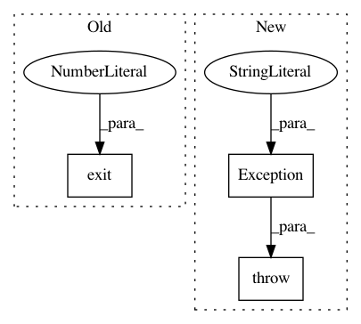

da24be79ab5d06e7be16d9eb0a35f47b7b91939b,tests/manual/check_callbacks.py,,,#,135
Before Change
except:
print("Tests passed")
import sys
sys.exit(0)
raise Exception("Modelcheckpoint tests did not pass")
After Change
model.fit(X_train, Y_train, batch_size=batch_size, nb_epoch=nb_epoch, verbose=0, callbacks=[checkpointer])
for i in range(nb_epoch):
if not os.path.isfile(f.format(epoch=i)):
raise Exception("Model weights were not saved separately for each epoch")
print("Tests passed")
In pattern: SUPERPATTERN
Frequency: 3
Non-data size: 3
Instances
Project Name: keras-team/keras
Commit Name: da24be79ab5d06e7be16d9eb0a35f47b7b91939b
Time: 2015-08-31
Author: amit.beka@gmail.com
File Name: tests/manual/check_callbacks.py
Class Name:
Method Name:
Project Name: apache/incubator-tvm
Commit Name: 19de6250f0c665cfd2bbf6b1f0293dbf39634ba3
Time: 2020-09-02
Author: areusch@octoml.ai
File Name: tutorials/optimize/opt_matmul_auto_tensorcore.py
Class Name:
Method Name:
Project Name: deeptools/HiCExplorer
Commit Name: d54d5992077aac8446e0a0d95e6bef788409a367
Time: 2020-04-03
Author: wolffj@informatik.uni-freiburg.de
File Name: hicexplorer/chicAggregateStatistic.py
Class Name:
Method Name: filter_scores_target_list